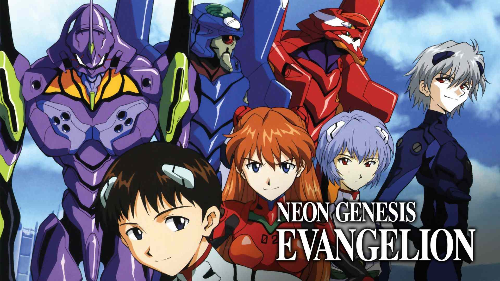

Welcome to EvaCentral, the comprehensive encyclopedia for the acclaimed anime series Neon Genesis Evangelion. Here, enthusiasts and newcomers alike can explore in-depth information, insights, and multimedia related to this iconic series.
"Neon Genesis Evangelion", created by Hideaki Anno and produced by Gainax and Tatsunoko Production, is a seminal Japanese anime series that first aired from October 1995 to March 1996. Set in a post-apocalyptic world of 2015, following a catastrophic event known as the Second Impact, it presents a futuristic Tokyo-3, under threat from mysterious beings called "Angels". The protagonist, Shinji Ikari, a withdrawn teenager, is summoned by his estranged father, Gendo Ikari, to pilot a giant bio-mechanical robot, an "Evangelion", in the fight against these Angels. The series delves into the psychological struggles of Shinji and other pilots, including the mysterious Rei Ayanami and the competitive Asuka Langley Soryu, against a backdrop of existential despair, human identity, and the psychological trauma of the young pilots. It combines mecha warfare with complex psychological themes, religious and philosophical references, and intricate plot lines. Anno's personal battles with depression heavily influenced the series' dark and introspective tone. The original series, consisting of 26 episodes, concludes with abstract, introspective sequences exploring the characters' psyches. "The End of Evangelion", a film providing an alternate narrative conclusion, depicts NERV's battle against SEELE and the surreal apocalypse resulting from the "Human Instrumentality Project". Anno revisited the series with the "Rebuild of Evangelion" film series, a reimagining of the original story with new elements. The final film, "Evangelion: 3.0+1.0 Thrice Upon a Time", released in 2021, offers a more hopeful resolution, focusing on the characters overcoming trauma to find fulfillment. "Evangelion" has been highly influential, sparking spin-offs, films, and extensive merchandise. Praised for its deep character development and exploration of complex themes, it remains a cornerstone of the mecha genre and Japanese pop culture.
Story line: www.evastoryline.com
Media vault and Merchandise: www.evamediavaultandstoryline.com